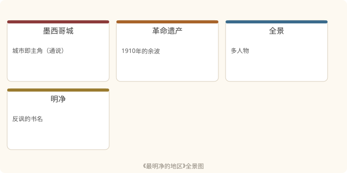

最明净的地区
一、基本信息
| 作者 | 卡洛斯·富恩特斯 |
|---|---|
| 成书/出版 | 出版年份待核（Britannica B287：'experimental, postmodern novels—including Where the Air Is Clear and The Death of Artemio Cruz'——1959年说通说待核） Carlos Fuentes — Encyclopaedia Britannica（百科全书） |
| 国别/地区 | 墨西哥 |
| 时代 | 现当代 · 20世纪 |
| 体裁 | 长篇小说 |
| 语言 | 西班牙语 |

《最明净的地区》全景图（主题·结构图）
二、创作背景
Britannica（B287）：'experimental, postmodern novels——including Where the Air Is Clear and The Death of Artemio Cruz——explored Mexican identity and won him international acclaim'。
题材（通说待核）：墨西哥城全景——从革命到工业化的城市'明净'反讽。
三、内容脉络
多人物全景：银行家、矿工、夫人（通说待核）。
城市即主角（通说待核）。
四、主要人物表
| 人物 | 身份 | 说明 |
|---|---|---|
| 罗德里戈·波拉 | 银行家 | （通说待核） |
五、主题与艺术特点
- 城市作为主角（通说待核）。
- 墨西哥革命的遗产（通说）。
- '最明净'的反讽（书名通说待核）。
六、影响与评论
- Britannica：与《阿尔特米奥·克罗斯之死》并列的实验后现代小说（B287）。
Carlos Fuentes — Encyclopaedia Britannica（百科全书） - 作者页：富恩特斯'20世纪墨西哥最重要的作家之一'（B287 作者级）。
Carlos Fuentes — Encyclopaedia Britannica（百科全书）
七、阅读建议
难点
- 墨西哥城地名与历史。
- 多人物全景。
- 《最明净的地区》（上海译文出版社/人民文学出版社版本，通说待核）。
- 西班牙文原版（FCE）。
富恩特斯处女作。
八、待核实
- 1959年出版（FCE说）核对。
- 罗德里戈·波拉人名核对。
- 处女作地位待核。
本页主要来源
卡洛斯·富恩特斯的其他收录作品：阿尔特米奥·克罗斯之死